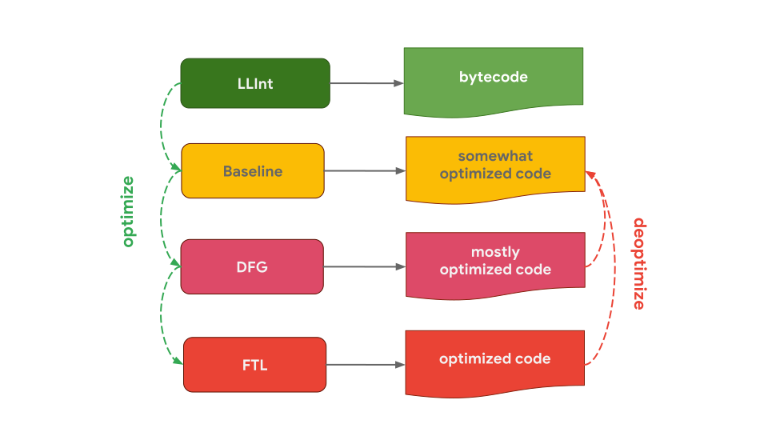
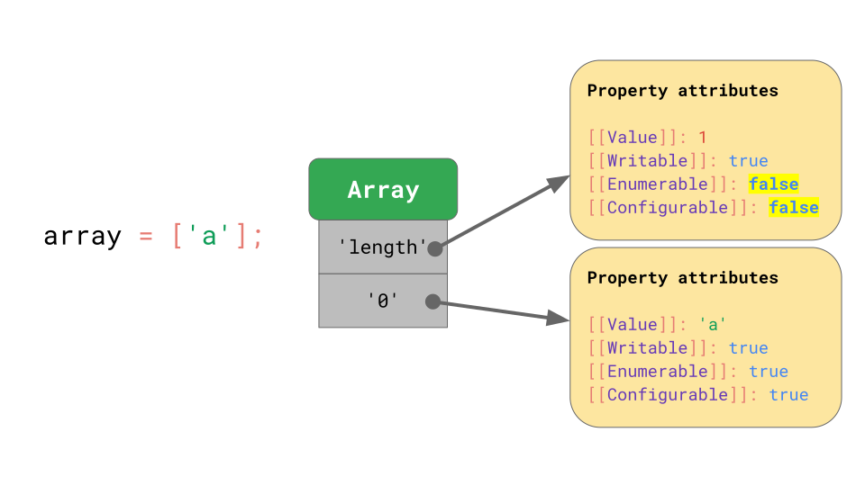
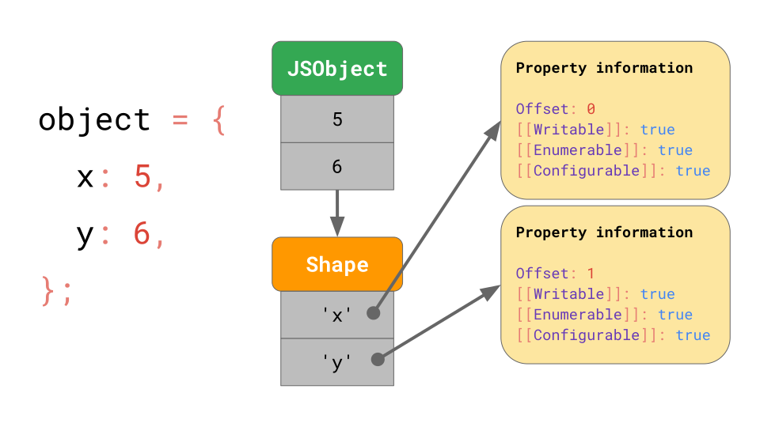
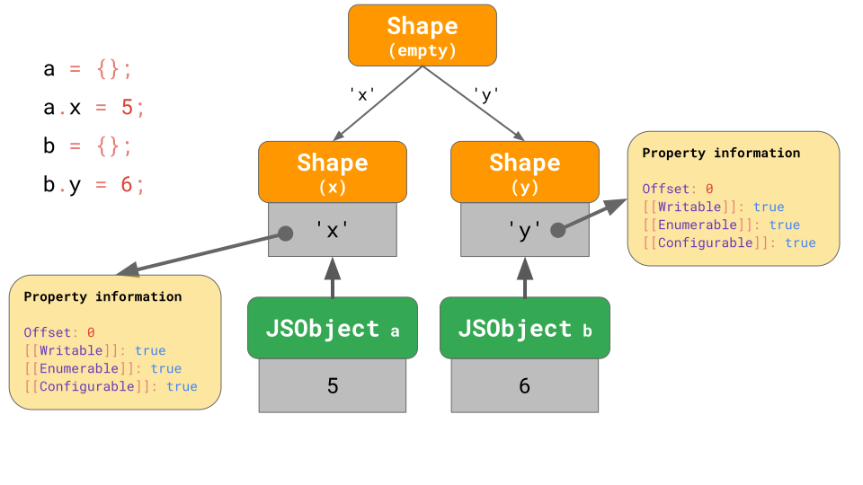
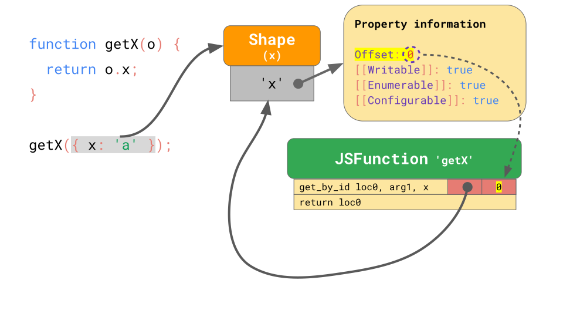

JavaScript 引擎原理：外形与内联缓存
前言
本文是根据自己的理解翻译而来，如有疑惑可查看原文 JavaScript engine fundamentals: Shapes and Inline Caches。
本次暂定翻译三篇文章：
- JavaScript engine fundamentals: Shapes and Inline Caches(Published 14th June 2018)
- JavaScript engine fundamentals: optimizing prototypes(Published 16th August 2018)
- The story of a V8 performance cliff in React(Published 28 August 2019)
JavaScript 引擎工作流
一切从你写的 JavaScript 代码开始。JavaScript 引擎会解析源码并将其转换成抽象语法树（AST）。基于 AST，解释器（interpreter）会进一步地生成字节码。

为了能够运行得更快，字节码可能会和分析数据（profiling data）一同发给优化编译器（the optimizing compiler）。优化编译器会根据这些分析数据作出某些假设以此生成高度优化的机器码。
如果某个时刻，某种假设被证明是错误的，优化编译器将去优化并回滚到解释器部分。
JavaScript 引擎中的解释器/编译器流程
现在来关注下 JavaScript 代码被解释和优化的地方，并重温下主流 JavaScript 引擎之间的不同之处。
一般来说，在运行 JavaScript 代码过程中，会有解释器和优化编译器的参与。解释器会快速地生成尚未优化的字节码，而优化编译器会耗费一些时间用来生成高度优化的机器码。

上面的流程和 V8 在浏览器和 Node 环境下的工作流程及其相似：

V8 引擎的解释器被称作 Ignition，主要负责生成和执行字节码。当字节码运行时，解释器会收集分析数据，这些数据之后可能会被用来提升执行速度。如果一个函数经常被调用，即 hot，那么，经过解释器转换来的字节码和收集到的分析数据会传给 TurboFan（V8 的优化编译器），进一步被加工成高度优化的机器码。

SpiderMonkey，Mozilla 的 JavaScript 引擎，拥有两个优化编译器，Baseline 和 IonMonkey。解释器将转换后的代码传给 Baseline 编译器，Baseline 编译器会将其加工成部分优化的代码。再加上收集到的分析数据，IonMonkey 编译器可以生成高度优化的代码。如果基于假设的优化不成立，IonMonkey 会将代码会滚到 Baseline 部分。

Chakra，Microsoft 的 JavaScript 引擎，也有着类似的两个优化编译器，SimpleJIT 和 FullJIT。解释器将转换后的代码传给 SimpleJIT（JIT，Just-In-Time），SimpleJIT 会将其加工成部分优化的代码。再加上收集到的分析数据，FullJIT 可以生成高度优化的代码。

JavaScriptCore（JSC），Apple 的 JavaScript 引擎，更是发挥到了极致，使用了三个不同的优化编译器，Baseline、DFG 和 FTL。低级解释器（LLInt）将转换后的代码传给 Baseline 编译器，经其加工后传给 DFG（Data Flow Graph） 编译器，进一步加工后，传给 FTL（Faster Than Light） 编译器。
为什么有些引擎的优化编译器会比其他引擎的多？这完全是取舍问题。解释器可以很快地生成字节码，但是字节码的效率不高。优化编译器虽然会花更长的时间，但是生成的机器码更为高效。是更快地去执行代码，还是花些时间去执行更优的代码，这都是需要考虑的问题。有些引擎添加多种不同特点（省时或高效）的优化编译器，虽然这会变得更加复杂，但却可以对以上的取舍有着更细粒度地控制。还有一点需要考虑的是，内存的使用。
以上只是强调了不同 JavaScript 引擎的解析器/编译器的区别。抛开这些不谈，从更高的层面来看，所有的 JavaScript 引擎有着相同的架构：一个解析器和一些解释器/编译器。
JavaScript 对象模型
再来看看，在某些具体实现上，JavaScript 引擎之间还有哪些相同之处。
例如，JavaScript 引擎是如何实现 JavaScript 对象模型的？它们又是如何提升对象属性访问速度的？事实证明，所有主流的引擎在这点实现上都非常得相似。
ECMAScript 规范把所有的对象定义为词典，将字符串键映射到属性特性（property attributes）。

除了 [[Value]]， 规范还定义了一下属性：
[[Writable]]定义是否可写。[[Enumerable]]定义是否可枚举。[[Configurable]]定义是否可配置。
[[双中括号]] 是用来描述不能直接暴露给 JavaScript 的属性。不过你依然可以通过 Object.getOwnPropertyDescriptor 获取某个对象上的以上属性。
1 | const object = { foo: 42 }; |
ok，这是 JavaScript 如何定义对象的。那么，数组呢？
你可以认为数组是一个特殊的对象。一个不同点是，数组会对数组索引特殊处理。数组索引是 JavaScript 规范中的一个特殊术语。数组索引是某个范围内的任何有效索引，即在 0 ～ 2³²−2 范围内的任何一个整数。
另一个不同点是，数组还有一个 length 属性。
1 | const array = ['a', 'b']; |
在这个例子里，数组创建好后，'length' 值为 2。当我们给数组索引为 2 的位置赋值时，数组的 'length' 会自动更新。
在 JavaScript 中，数组的定义和对象很相似。例如，数组的所有的键（包括数组索引）都是字符串表示。数组的第一个元素存在键值为 '0' 的地方。

另一个属性是 'length' 属性，该属性不可枚举不可配置。
一旦数组添加一个元素，JavaScript 会自动更新 'length'属性上的 [[Value]] 值。
一般来说，数组的行为也是和对象非常相似。
优化属性的访问
既然我们知道在 JavaScript 中如何定义对象的。接下来让我们深入了解 JavaScript 引擎是如何高效地处理对象的。
属性访问是最常见的一个操作，对 JavaScript 引擎来说，提升访问速度事件很有意义的事。
1 | const object = { |
外形（Shapes）
在 JavaScript 程序中，有相同键的对象很多，它们有相同的 Shape。
1 | const object1 = { x: 1, y: 2 }; |
有着相同 Shape 的对象，自然会访问相同的属性。
1 | function logX(object) { |
考虑到这一点，JavaScript 引擎可以基于 对象的 Shape 来优化对象属性的访问速度。
我们假设一个对象有 x、y 属性，且用着字典这种数据结构：它包含字符串表示的键，并且键指向各自的属性特性（property attributes）。
如果要访问一个属性，例如 object.y，JavaScript 引擎会在 JSObject 中查找 y，然后加载对应的属性特性，最后返回 [[Value]]。
但是在内存中，这些属性特性要存储在哪儿呢？我们应该把它们当作 JSObject 的一部分存储吗？假设之后会有更多的拥有相同 Shape 的对象，如果我们在 JSObject 上存储一个包含属性名称和属性特性的完整字典的话，那显然会是一种浪费。因为拥有相同 Shape 的对象，它们的属性名称会重复。这回造成大量重复和不必要的内存使用。作为优化，引擎将对象的 Shape 单独地存储。

Shape 包含所有的属性名称和属性特性，除了 [[Value]]。不过，Shape 包含了 [[Value]] 在 JSObject 上的偏移量，因此 JavaScript 引擎知道去哪里找到相应的值。 每个拥有相同 Shape 的 JSObject 都指向同一个 Shape 实例。现在，每个 JSObject 只需存储对象的值即可。

当我们有很多个对象时，好处也是显而易见的。不管有多少个对象，只要有相同的 Shape，Shape 和属性信息只需要存储一次。
所有的 JavaScript 引擎都用 Shapes 来优化，但叫法却不同：
- 学术论文称之为 Hidden Classes（容易和 JavaScript 中的 Class 混淆）
- V8 称之为 Maps（容易和 JavaScript 中的 Map 混淆）
- Chakra 称之为 Types（容易和 JavaScript 中的动态类型与 typeof 混淆）
- JavaScriptCore 称之为 Structures
- SpiderMonkey 称之为 Shapes
在这篇文章中，我们继续称之为 Shapes。
过渡链与树（Transition chains and trees）
如果一个对象有了一个确定的 Shape,然后又添加了一个属性，这会发生什么呢？JavaScript 引擎如何找到改变后的新 Shape？
1 | const object = {}; |
在 JavaScript 引擎中，这种 Shapes 结构称之为过渡链。如下：

对象开始时没有任何属性，因此它会指向一个空的 Shape。下一条语句对象添加了一个属性 'x'，属性值为 5，因此对象指向包含属性 'x' 的 Shape，且在 JSObject 中偏移量为 0 的位置添加 5。下一条语句对象添加了一个属性 'y'，属性值为 5，因此对象指向包含属性 'x' 和 'y' 的 Shape，且在 JSObject 中偏移量为 1 的位置添加 6。
注意： 属性的添加顺序会影响
Shape。例如，{x: 4, y: 5}和{y: 5, x: 4}有不同的Shape。
我们没有必要让每个 Shape 都存储完整的属性表。相反，每个 Shape 只需要知道新引入的属性即可。例如，在这种情况下，我们没有必要在最后一个 Shape 中存储属性 'x' 的信息，因为它可以在链的上游中被查找到。要达此目的，每个 Shape 都会和先前的 Shape 链接。

如果你在 JavaScript 代码中写了 o.x，JavaScript 引擎会沿着过渡链查找属性 'x'，直到发现引入 'x' 的 Shape。
但是，如果没法创建过渡链呢？例如，给两个空对象添加不同的属性。
1 | const object1 = {}; |
这种情况下，不得不进行分支处理，用过渡树（transition tree）取代过渡链。

在这里，我们创建了一个空对象 a并给它添加了属性 'x'。最终得到以一个包含单个值的 JSObject和两种 Shape（空的 Shape 和仅有属性 'x' 的 Shape）。
第二个例子也是以一个空对象 b 开始，但是添加的是属性 'y'。最终得到两条 Shape 链和三个 Shape。
这是否意味着总是以空 Shape 开头呢？不一定。
引擎对已经存在属性的对象字面两做了优化。来看两个例子，一个是从空的对象开始添加属性 'x'，一个是已经存在属性 'x' 的对象字面量。
1 | const object1 = {}; |
第一个例子中，我们从空的 Shape 过渡到包含属性 'x' 的 Shape，就如之前所看到的那样。
对于 object2，它直接生成包含属性 'x' 的对象而不是从空对象开始过渡。

这个包含属性 'x' 的对象，以包含 'x' 的 Shape 开头，省去了空 Shape 这个步骤。至少 V8 和 SpiderMonkey 是这么做的。这种优化缩短了过渡链，使得创建对象更加高效。
Benedikt 的文章 surprising polymorphism in React applications 讨论了这些微妙之处是如何影响到实际性能的。
这有一个拥有属性 'x'、‘y’、‘z’` 的三维点对象的例子。
1 | const point = {}; |
就如之前所学到的，在内存上，这回创建有三个 Shape 的对象（空 Shape 不计入）。访问对象的属性 'x'，例如，如果你在程序中写下了 point.x，JavaScript 引擎会顺着链表：它会从底部的 Shape 开始，一直向上查找，直到发现引入 'x' 的那个 Shape。

如果这种操作很频繁，就会显得很慢，尤其是一个对象有很多属性时。检索到需要的属性所花时间是 O（n），即线性的。为了提高检索速度，JavaScript 引擎加入了 ShapeTable 数据结构。ShapeTable 是个字典，它将属性和引入该属性的 Shape 关联起来。

且慢，我们又回到了字典查找……这不就是我们在引入 Shapes 之前的方式吗？为什么我们非要整出个 Shapes？
原因是 Shapes 可以实现另一种称之为内联缓存的优化。
内联缓存（Inline Caches (ICs)）
ICs 是 JavaScript 快速运行的关键因素。JavaScript 引擎可以利用 ICs 缓存对象的属性信息，从而减少属性查找的开销。
有个函数 getX ，接受一个对象并加载该对象上的属性 x：
1 | function getX(o) { |
如果我们在 JSC（JavaScriptCore） 中运行这个函数，它会生成以下的字节码：

第一条指令（get_by_id）是从参数 arg1 中加载属性 x，并将其值存储到 loc0 中。第二条指令是返回 loc0 中存储的值。
JSC 还在 get_by_id 指令中嵌入了内联缓存，它是由两个未初始化的插槽组成。

现在给函数 getX 传入对象 { x: 'a' }。如我们所知，这个对象有一个包含属性 x 的 Shape，这个 Shape 存储了属性 x 的偏移量和特性。当我们第一次执行函数时，get_by_id 指令会查找属性 x 并检索到值被存储在偏移量为 0 位置。

嵌在 get_by_id 指令中的内联缓存会记住 Shape 和属性的偏移量。

在下次函数执行时，内联缓存会对比 Shape，如果与之前的 Shape 相同，就只需要通过缓存的偏移量加载值。具体来说，如果 JavaScript 引擎发现对象的 Shape 和之前记录的 Shape 一样，那么它就再也不需要去查找属性信息了 —— 属性信息的查找就可以完全跳过。相比每次都去查找属性信息，这样的操作会显著地提升速度。
高效存储数组（Storing arrays efficiently）
对于数组，使用数组索引作为数组的属性是很常见的，属性对应的值称之为数组元素。为每个数组的每个数组元素存储属性特性是一种铺张浪费的行为。在 JavaScript 引擎中，数组的索引属性默认是可读、可枚举和可配置的，且数组元素是与命名属性分开存储的。
思考以下这个数组：
1 | const array = [ |
引擎存储了一个数组长度为 1 的数组，它指向一个包含偏移量和 length 特性的 Shape。

这个之前见过的很相似…… 但是数组元素的值存在哪呢？

每个数组都有一个独立的元素备份存储（elements backing store），包含着所有索引属性对应的值。JavaScript 引擎不必为数组元素存储属性特性，因为他们通常是可写、可枚举和可配置的，且数组索引可以替代偏移量的作用。
如果是不寻常的情况会怎样呢？比如，改变数组元素的属性特性（property attributes）。
1 | // Please don’t ever do this! |
上面的这个代码片段是给对象属性 '0' 的特性设置成非默认值。
像这种情况，JavaScript 引擎会将整个元素备份存储表示为一个字典，把数组索引和属性特性关联起来。

即使数组中只有一个元素的属性特性是非默认值，元素备份存储也会进入缓慢低效的模式（从 Elements 模式 到 Dictionary Elements 模式）。避免用 Object.defineProperty 改变数组索引！
看点（Take-aways）
基于以上的知识，我们可以使用一些 JavaScript 编程技巧来提升性能：
- 始终以相同的方式初始化对象，这样就可以复用
Shape。 - 不要没事瞎折腾数组元素的属性特性，它们本可以高效地工作。